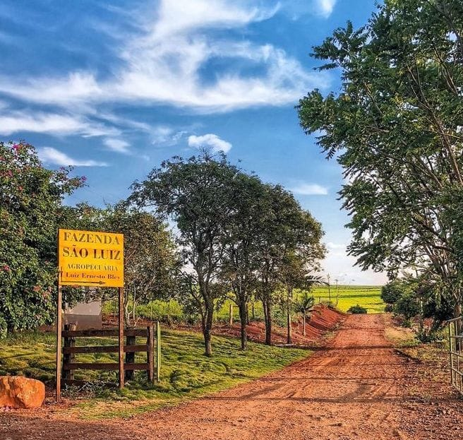

A fazenda São Luiz está localizada no município de Nova Fátima, estado do Paraná.
Possui uma área de cultivo de aproximadamente 622,582 hectares.
A fazenda cultiva trigo do tipo 1 para a comercialização.
Telefone para contato:(43) 9 9609-3095
 Foto registrada pelo autor (2024).